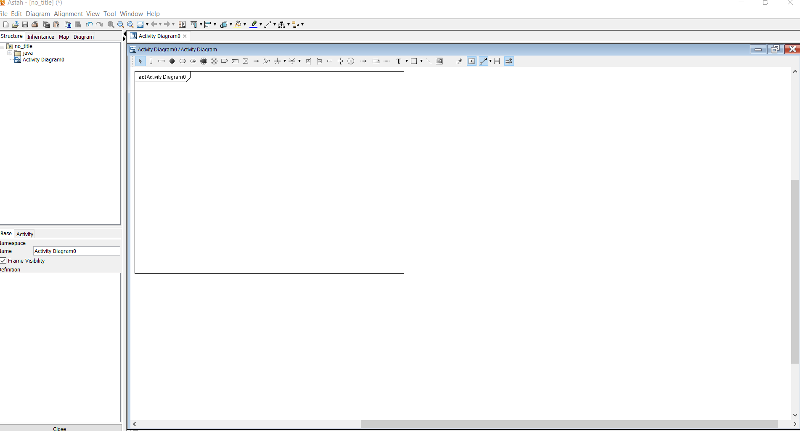
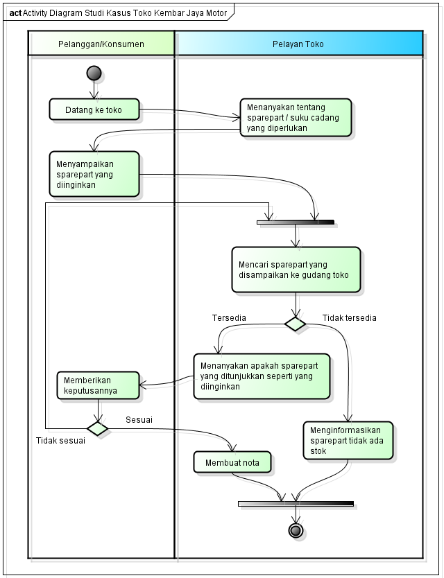

NIM : 1811500042
Nama : Arie Saputra
Kelompok: TI6A
Hasil saya menyadur di pertemuan ke 2 :
Dosen pengajar mengingatkan kepada mahasiswa terkait cara mengisi perhitungan nilai kehadiran dan nilai untuk tugas di setiap pertemuan.
untuk absensi, melakukan seperti contoh di pertemuan ke-1, yaitu login ke akun github yang telah kita buat. lalu membuat direktori yang dinamain sesuain dengan pertemuan yang
sedang berlangsung, lalu membuat file index.html yang berisikan NIM, Nama, dan Kelompok. untuk tugas, sama seperti step awal pada absensi, kita masih menggunakan direktori dan
file index.html yang sama untuk mengisi hasil saduran/rangkuman kita.
Pertemuan ke-2, belajar tentang activity diagram. memecahkan suatu studi kasus tentang penjualan di suatu toko. lalu menganalisa bagaimana sistem berjalan yang terjadi pada studi kasus tersebut.
belajar cara penggunaan Astah Community untuk membuat suatu activity diagram. dosen menjelaskan kegunaan tools yang terdapat pada aplikasi tersebut, dengan cara yang mudah dipahami. linkny terdapat dibawah. Link Astah Community
Seperti inilah tampilan awal Astah Community untuk membuat activity diagram:

saya pun mencoba membuat activity diagram yang dicontohkan oleh dosen, lalu sedikit merubahnya agar mengerti cara pembuatannya. seperti inilah hasil yang saya buat :

dan ada juga hasil file astah yang saya sertakan dibawah ini : Download File